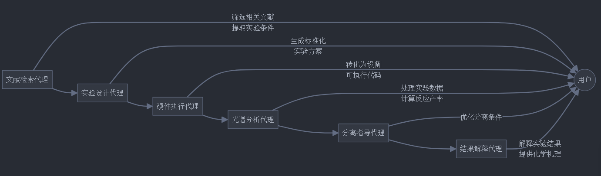
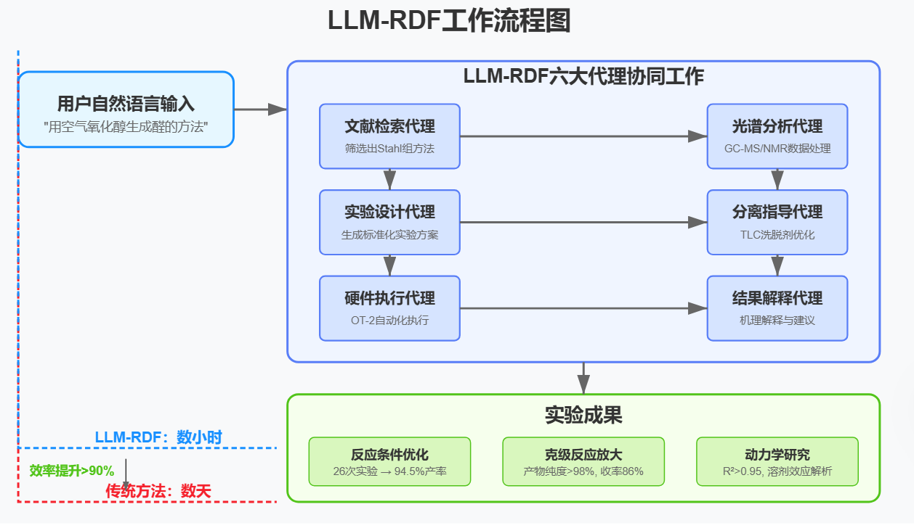

化学合成是药物研发和工艺开发的核心任务，但其过程复杂且高度依赖专家经验。传统的合成开发通常需要化学家进行大量的文献检索、实验设计、条件优化和数据分析，这一过程不仅耗时，还涉及高昂的成本。尽管机器学习技术已经在某些环节（如催化剂设计、反应条件优化）展现出潜力，但现有的方法通常是单一功能的工具，无法实现全流程的自动化。
核心问题：为什么需要自动化？
- 设计空间巨大：化学合成的设计空间非常庞大，涉及底物、催化剂、溶剂、温度等多个变量，手动筛选最优条件几乎是不可能的任务。
- 实验验证的必要性：即使通过计算预测出可能的反应路径，仍需实验验证，而实验本身耗时且资源密集。
- 多目标优化：合成反应不仅需要高收率，还需考虑成本、安全性、可持续性等多个目标，这使得优化过程更加复杂。
现有技术的局限
尽管机器学习技术已经在化学合成中取得了一些进展，例如：
- 深度学习辅助的催化剂设计：通过定量构效关系（QSAR）模型预测催化剂性能。
- 自动化合成规划：利用机器学习快速筛选可能的合成路径。
- 高通量实验平台：通过自动化设备加速反应条件筛选。
然而，这些技术通常是单一功能的工具，无法覆盖从文献检索到产物纯化的全流程。此外，现有的自动化平台通常需要复杂的编程和硬件操作技能，限制了其在化学家中的普及。
突破：LLM驱动的自动化平台
最近，一项发表在Nature Communications的研究提出了一种全新的解决方案——基于大语言模型的反应开发框架（LLM-RDF）。该平台利用GPT-4的强大能力，构建了六个专门的LLM代理，分别负责文献检索、实验设计、硬件控制、光谱分析、分离指导和结果解释。这些代理通过自然语言与化学家交互，实现了从实验设计到数据分析的全流程自动化。
核心功能：六大代理，无缝协作

- 文献检索代理（Literature Scouter）
通过Semantic Scholar数据库，自动筛选出最相关的合成方法。例如，用户只需输入“用空气氧化醇生成醛的方法”，代理就能快速推荐最优的催化体系（如铜/TEMPO催化氧化），并提取详细的实验条件。
- 实验设计代理（Experiment Designer）
将自然语言描述的实验需求转化为标准化的实验方案。例如，用户描述“筛选6种底物、4种催化剂和2种碱”，代理自动生成实验设计，并优化溶剂选择（如用DMSO替代易挥发的乙腈）。
- 硬件执行代理（Hardware Executor）
将实验方案转化为自动化设备的可执行代码。例如，生成Opentrons OT-2液体处理器的Python脚本，实现高通量筛选和动力学实验的自动化。
- 光谱分析代理（Spectrum Analyzer）
自动化处理GC-FID-MS和NMR数据，识别特征峰并计算反应产率。例如，通过质谱碎片（如m/z 132）识别底物和产物，并自动生成产率报告。
- 分离指导代理（Separation Instructor）
优化TLC和柱层析的洗脱剂组成。例如，通过迭代实验确定最佳洗脱剂比例（如正己烷:乙酸乙酯=3:1），确保产物高效分离。
- 结果解释代理（Result Interpreter）
分析实验结果并给出化学解释。例如，在铜催化氧化反应中，代理发现DBU碱的性能优于NMI，并解释了电子效应对反应速率的影响。
案例展示：从实验室到工业化
研究团队通过多个案例验证了LLM-RDF的强大能力：
论文实验部分详细分析

上面的图表展示了LLM-RDF平台的整体工作流程，从用户输入自然语言指令，到六大代理协同工作，最终得出实验结果。下面是各个案例的关键点：
案例一：文献检索与信息提取
用户只需输入"用空气氧化醇生成醛的方法"，Literature Scouter代理就能在几分钟内从Semantic Scholar数据库中筛选出Stahl研究组的铜/TEMPO催化氧化方法，并提取详细实验条件。这将传统文献筛选时间从数小时缩短至几分钟。
案例二：底物范围与条件筛选
系统通过高通量实验筛选了48个反应条件（6种底物×4种催化剂×2种碱）。Experiment Designer代理优化了溶剂选择，Hardware Executor代理生成了自动化设备代码，Spectrum Analyzer代理处理了分析数据。最终发现CuCl₂/DBU组合效果最佳，整个过程仅需几小时（传统方法需数天）。
案例三：反应动力学研究
系统研究了铜/TEMPO催化氧化反应在不同溶剂中的动力学行为。通过10小时自动采样和NMR数据分析，系统发现DMSO溶剂中产物过氧化速率低于乙腈，解释了其高选择性的原因。模型拟合精度达R²>0.95。
案例四：反应条件优化
系统利用贝叶斯优化算法自动优化了铜/TEMPO催化氧化反应条件。Hardware Executor代理生成自动化平台代码，系统在26次实验内找到了最优条件（Cu(OTf)₂/DBU组合，反应时间45分钟），产率达94.5%。传统方法通常需要数百次实验。
案例五：反应放大与产物纯化
系统成功将实验室规模反应放大到1克规模，Separation Instructor代理通过迭代TLC实验确定了最佳洗脱剂比例（正己烷:乙酸乙酯=3:1）。最终产物纯度超过98%，总收率达86%。
总体收益
- 实验效率：传统方法需要数天完成的工作，LLM-RDF平台几小时内即可完成
- 优化能力：减少了90%以上的实验次数，同时提高了产率
- 专业知识整合：自动提取和应用领域知识，减少对人类专家的依赖
- 可重复性：标准化工作流程提高了实验可重复性
- 放大潜力：为工业化生产提供可行方案
这种AI驱动的化学合成自动化平台代表了实验室工作方式的革命性变革，将大幅加速新药和新材料的研发进程。
3. 实验结果与讨论
- 效率提升：LLM-RDF在多个任务中显著提高了实验效率。例如，文献检索时间从数小时缩短至几分钟，条件筛选从数天缩短至几小时，优化实验次数从数百次减少至数十次。
- 准确性验证：代理生成的结果与传统方法高度一致。例如，GC-FID-MS数据分析结果与商业软件的一致性达95%，动力学模型拟合结果R²>0.95。
- 通用性验证：LLM-RDF在多个反应类型（如SNAr反应、光催化C-C偶联、光电化学反应）中均表现出色，展示了其广泛的适用性。
4. 局限性与未来方向
- 可靠性问题：LLM生成的硬件代码需人工审核，未来可通过自检代理提升自动化水平。
- 领域知识不足：通过微调和RAG技术注入更多化学知识，提升代理的机理解释能力。
- 开源替代：开源模型（如Llama3.1-70B）在部分任务中表现接近GPT-4，未来有望成为更经济的替代方案。
在科学与技术的交汇处，每一次突破都是人类智慧与机器能力的共舞。大语言模型驱动的化学合成平台，不仅是对传统实验模式的颠覆，更是我们对未来无限可能的探索。正如化学反应中的每一次键合与断裂，都蕴含着新的生机与希望，AI与化学的结合，也将为人类打开一扇通往未知世界的大门。
（1）文献检索与信息提取
- 任务描述：用户输入“用空气氧化醇生成醛的方法”，Literature Scouter代理通过Semantic Scholar数据库筛选出相关文献，并推荐最优的催化体系（如铜/TEMPO催化氧化）。
- 结果：代理成功推荐了Stahl组的方法，并提取了详细的实验条件（如催化剂、溶剂、反应时间等）。与传统手动检索相比，代理显著减少了文献筛选的时间（从数小时缩短至几分钟）。
（2）底物范围与条件筛选
- 任务描述：通过高通量实验（HTS）筛选6种底物、4种催化剂和2种碱的组合，共48个反应条件。
- 实验设计：Experiment Designer代理将自然语言描述的实验任务转化为标准化的实验方案，并优化溶剂选择（用DMSO替代易挥发的乙腈）。
- 硬件执行：Hardware Executor代理生成Opentrons OT-2液体处理器的Python脚本，自动化执行反应。
- 数据分析：Spectrum Analyzer代理处理GC-FID-MS数据，自动识别底物和产物峰，并计算反应产率。
- 结果：代理成功筛选出最优条件（如CuCl₂/DBU组合），并发现电子效应对反应速率的影响。与传统手动筛选相比，代理显著提高了实验效率（从数天缩短至几小时）。
（3）反应动力学研究
- 任务描述：研究铜/TEMPO催化氧化反应在不同溶剂（如DMSO和乙腈）中的动力学行为。
- 实验设计：Experiment Designer代理设计了一个10小时的采样计划，Hardware Executor代理生成OT-2代码自动化采样。
- 数据分析：Spectrum Analyzer代理处理1H NMR数据，自动识别特征峰并计算反应物和产物的浓度。
- 模型拟合：Result Interpreter代理拟合动力学模型，发现DMSO溶剂中产物过氧化速率较低，解释了其高选择性的原因。
- 结果：代理成功建立了反应动力学模型（R²>0.95），并揭示了溶剂效应的机制。
（4）反应条件优化
- 任务描述：利用贝叶斯优化（BO）算法自动化优化铜/TEMPO催化氧化反应的条件（如催化剂种类、反应时间、碱用量）。
- 实验执行：Hardware Executor代理生成Unchained Labs Big Kahuna平台的运行代码，自动化执行反应。
- 优化过程：BO算法根据实验结果动态调整参数空间，Result Interpreter代理评估优化进展并提出终止建议。
- 结果：代理在26次实验内找到最优条件（如Cu(OTf)₂/DBU组合，反应时间45分钟），产率达94.5%。与传统手动优化相比，代理显著减少了实验次数（从数百次减少至数十次）。
（5）反应放大与产物纯化
- 任务描述：将实验室规模的铜/TEMPO催化氧化反应放大到1克规模，并优化产物分离条件。
- 实验设计：Experiment Designer代理设计放大策略（如两阶段放大：1克→100克），并计算试剂用量。
- 分离优化：Separation Instructor代理通过迭代TLC实验确定最佳洗脱剂比例（如正己烷:乙酸乙酯=3:1）。
- 结果：代理成功放大反应，产物分离后纯度>98%，收率达86%。与传统手动放大相比，代理显著提高了放大效率。